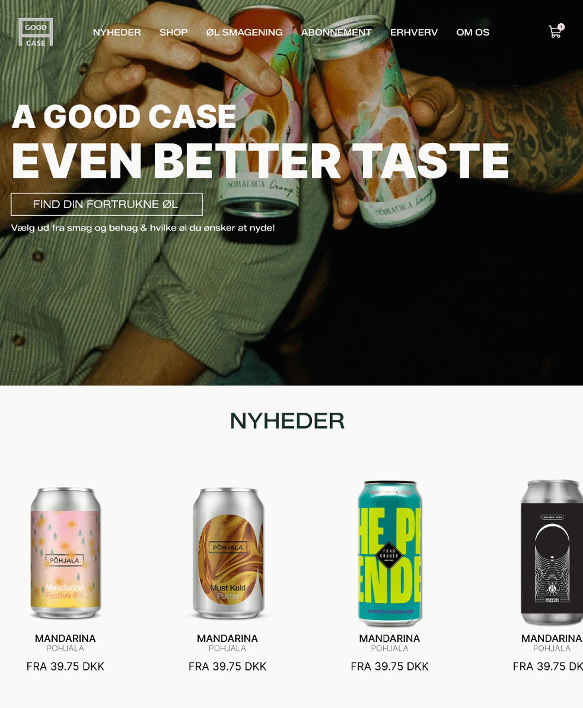
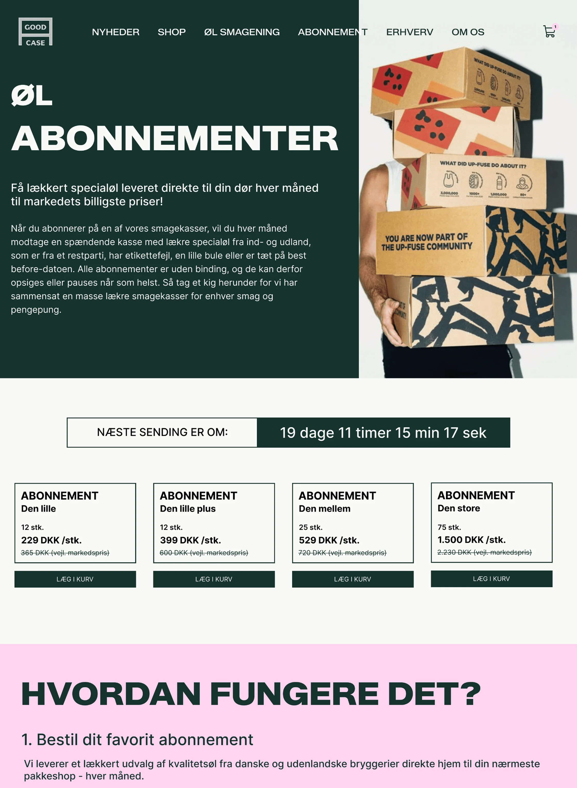
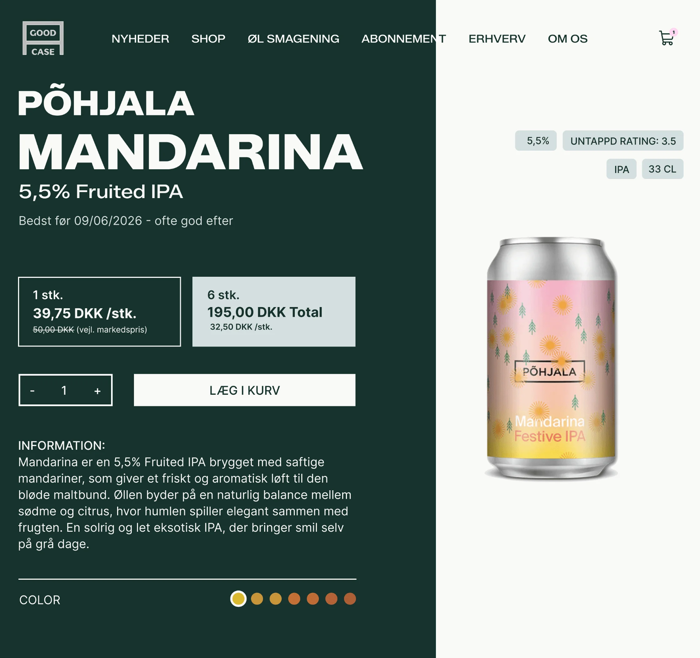
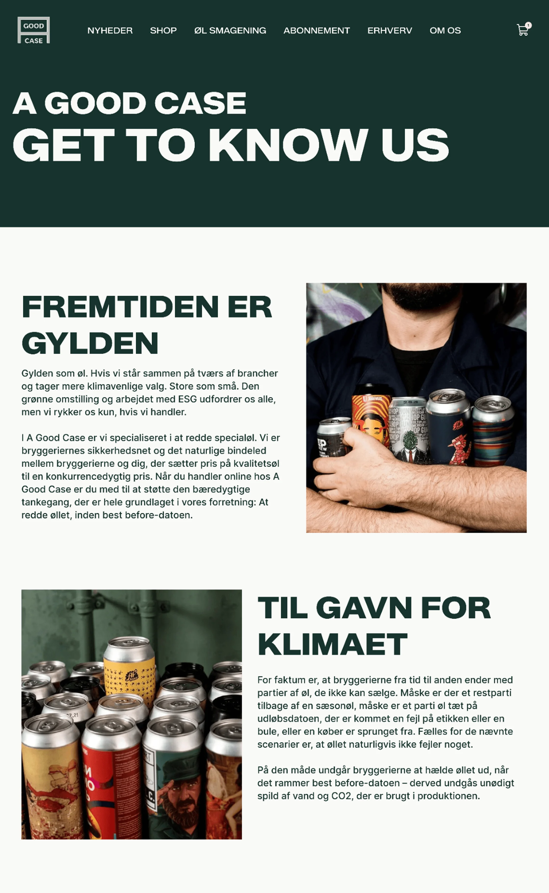

A GOOD CASE
A Good Case is a sustainable beer brand focused on reducing product
waste.
The project focused on redesigning and developing their existing
webshop to create a more professional, trustworthy and user-friendly
digital experience.
The process included user and design research, UX/UI design,
information architecture, wireframing, prototyping and user
testing.
A new visual direction was developed alongside key webshop features,
including dynamic product content, filtering and responsive design.



